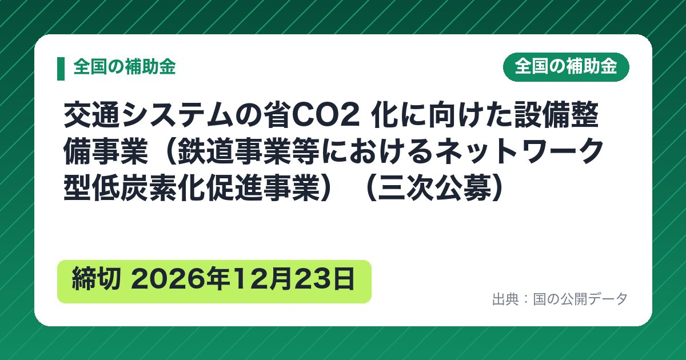

交通システムの省CO2 化に向けた設備整備事業（鉄道事業等におけるネットワーク型低炭素化促進事業）（三次公募）

締切 2026年12月23日｜上限 要確認
鉄道（回生電力・車両省エネ・先進省エネ）
概要
| 対象地域 | 全国 |
|---|---|
| 補助上限額 | 要確認 |
| 補助率 | 公募要領を参照 |
| 受付期間 | 2026年10月5日 〜 2026年12月23日 |
| 対象の従業員数 | 従業員数の制約なし |
| 利用目的 | 安全・防災対策支援がほしい / まちづくり・地域振興支援がほしい / 設備整備・IT導入をしたい / エコ・SDGs活動支援がほしい |
| 対象業種 | 公務（他に分類されるものを除く） / 運輸業、郵便業 / 不動産業、物品賃貸業 |
| 実施機関 | 二酸化炭素排出抑制対策事業費等補助金 |
広告補助金の申請には決算書・帳簿が必要です。会計ソフト・開業の手続きの例：
・やよいの青色申告オンライン  （個人事業主の確定申告に）
（個人事業主の確定申告に）
・無料の確定申告自動化ソフト マネーフォワード クラウド確定申告  （確定申告をかんたんに）
（確定申告をかんたんに）
・無料の会計自動化ソフト マネーフォワード クラウド会計  （法人・個人の会計を自動化）
（法人・個人の会計を自動化）
・補助金なら、パソコンとセットでお得に導入【freee会計】  （補助金を使う導入プランあり・詳細は公式で）
（補助金を使う導入プランあり・詳細は公式で）
・開業届作成するなら【弥生のかんたん開業届】  （創業補助金の前に個人で開業する方へ）
（創業補助金の前に個人で開業する方へ）
・会社設立を無料で始めるなら【弥生のかんたん会社設立】  （法人を作る方へ）
（法人を作る方へ）
公募の内容（原文の抜粋）
一般社団法人地域循環共生社会連携協会では、二酸化炭素排出抑制対策事業費等補助金（地域の公共交通×脱炭素化移行促進事業）に係る環境省からの交付決定を受け、交通システムの省CO2化に向けた設備整備事業（鉄道事業等におけるネットワーク型低炭素化促進事業）の補助事業者を公募します。
■目的・概要
（目的）
車両の省エネ化や鉄道車両が減速時に発生させる回生電力の有効活用をバランス良く組み合わせることにより、鉄道システムの省CO2化を推進することを目的としています。
事業の実施により、エネルギー起源二酸化炭素の排出量が確実に削減されることが重要です。
（概要）
鉄軌道分野における省エネ・省CO2化を図るために必要な設備等の整備を行うための事業
１．車両の省エネ化に資する設備導入促進事業
②車両への省エネ設備の導入により４０％以上のCO2削減効果が見込まれる車両の改修 【車両省エネ】
２．回生電力の有効活用に資する設備等の省CO2効果の高い先進的な設備・システムの導入を実施する事業
①回生電力の有効活用に資する設備の導入【回生電力】
②省CO2効果の高い先進的な設備・システムの導入【先進省エネ】
■応募資格
ａ．鉄道事業法（昭和６１年法律第９２号）第３条に基づく許可を有する事業者
ｂ．軌道法（大正１０年法律第７６号）第３条に基づく事業の特許を有する事業者
ｃ．導入する設備等をａ又はｂの者に対し、リース等により提供する事業者
■補助上限額
公募要領を参照
■補助事業期間
原則として２年度以内
※ただし、複数年度申請をする場合、応募時に年度ごとの事業経費を明確に区分した経費内訳書及び実施計画書が提出されることを前提とします。この場合、補助金の交付申請等は、年度ごとに行っていただく必要があります。今年度の事業については、交付決定の日から令和９年２月２８日までに完了する必要があります。
■問合せ先
一般社団法人地域循環共生社会連携協会 事業部
担当：花田、中島
問合せ用メールアドレス：koutsu08@rcespa.jp
■参考URL ※申請様式は下記よりダウンロードをお願いいたします。
https://rcespa.jp/r08-kotsu/r08-kotsu-no3
広告
全国のほかの補助金
- 「グリーンイノベーション基金事業／次世代型地熱技術の開発」の公募（締切 2026年11月20日）
- 令和７年度（補正予算）地域脱炭素実現に向けた具体的施策実装支援事業（四次公募）（締切 2026年11月20日）
- 令和８年度地域脱炭素実現に向けた具体的施策実装支援事業（締切 2026年11月20日）
- 【三次公募】令和８年度 天然ガス利用設備による強靱性向上対策事業費補助金（締切 2026年11月20日）
- エイジフレンドリー補助金（締切 2026年11月20日）
- 「太陽光発電導入拡大等技術開発事業」の第3回公募（締切 2026年11月25日）
- 【農林水産省】中山間地域所得確保推進事業（締切 2026年11月25日）
- 「ポスト5G情報通信システム基盤強化研究開発事業（社会課題解決に向けた量子コンピュータ次世代機開発・実証の加速）」（g12-2：部素材）の追加公募（締切 2026年11月26日）